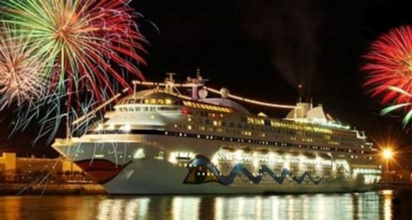
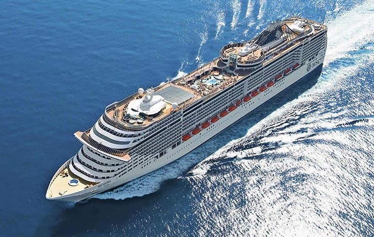
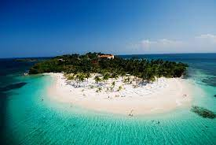

Crociera MSC, a Capodanno!

8 giorni e 7 notti nel Mediterraneo Occidentale, che offre tariffe più basse del solito. Una vacanza in crociera che vi garantirà relax ma anche divertimento, difatti per la notte di capodanno ci sarà una cena spettacolo con tanti effetti speciali. Si parte da soli 300 € a persona con partenza da Genova, Palermo e Civitavecchia.
Si salpa! Crociere MSC Croazia e Grecia a prezzi straordinari

Crociera MSC da due porti: 8 giorni e 7 notti nel Mediterraneo Orientale a bordo di MSC Armonia da soli 349€. Partenza dal porto di Venezia, visitando Kotor, Mykonos, Santornini, Bari e ritorno al porto di Venezia. La MSC Sinfonia, una nave unica per design e confort, resa ancora più accogliente da un equipaggio selezionatissimo. Diverse attrezzature disponibili, tra cui jacuzzi, piscine, minigolf, discoteca, casinò, teatro, cinema, palestra e tanto altro.
IBellissima crociera nella Repubblica Dominicana!

4 giorni e 3 notti a bordo della Norwegian Sky. La crociera è organizzata per aprile 2024 ed offre varie esperienze culinarie, assistenza ospiti a bordo e programmi dedicati ai bambini e ragazzi, attività sportive ed intrattenimento. Il prezzo è di 100 € a persona a notte.